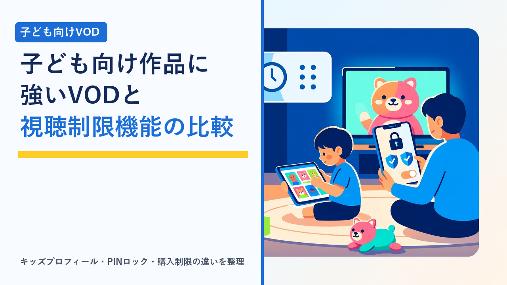

子ども向け作品に強いVODとペアレンタルコントロール機能の比較
更新日：2026-10-01

子どもがいる家庭で動画配信サービス（VOD）を選ぶとき、見るべきポイントは「子ども向け作品が多いか」だけではありません。子どもが見てよい作品だけを表示できるか、保護者の知らないうちに課金されない仕組みがあるか、視聴時間を管理できるかといった「ペアレンタルコントロール（保護者による制限）機能」の有無が、日々の使いやすさと安心感を大きく左右します。この記事では、子ども向け作品のラインナップがサービスのタイプによってどう違うか、そして各社が用意している制限機能にはどんな種類があるかを客観的に整理し、年齢別の確認ポイントまでまとめます。特定サービスの機能や配信作品を保証するものではなく、選び方の考え方を扱います。
子ども向け作品のラインナップはサービスのタイプで傾向が分かれる
「子ども向け作品」とひとくくりにされがちですが、実際には幼児向けの教育番組、テレビ放送中のキッズアニメ、劇場版アニメ、海外のキッズ向けシリーズ、知育・工作・歌といった番組など中身は幅広く、どこに強いかはサービスの成り立ちによって異なります。大きく4つのタイプに分けて見ると傾向がつかみやすくなります。
① グローバル総合型
世界展開する配信事業者。自社制作のキッズ向けオリジナル作品や海外の人気キッズシリーズが多く、キッズプロフィールなど制限機能も整っている傾向。日本のテレビアニメの放送中タイトルは限定的なことも。
② 国内総合型
日本国内の事業者による総合サービス。国内のテレビアニメや劇場版、戦隊・特撮、幼児向け番組まで本数が多い傾向。都度課金（レンタル）が混在するため、購入制限の設定が重要になる。
③ 放送局系・テレビ局系ネット配信
テレビ局が運営する配信。放送中のキッズアニメや幼児向け番組の見逃し配信、放送局が権利を持つ長寿シリーズに強い。無料で見られる枠があるサービスも。
④ キッズ特化・教育系
子ども向け作品だけを扱うサービスやアプリ。表示される作品がすべて子ども向けなので制限の手間が少ない反面、家族全員で使う総合サービスとしては使えない。
家庭で1つだけ契約するなら①か②の総合型が候補になりやすく、「子ども専用」と割り切るなら④、放送中の作品の見逃しを中心に見たいなら③という整理になります。幼児向けの教育番組は放送局と関係の深いサービスに集まりやすく、海外の人気キッズ作品や劇場アニメは配信元の系列サービスで独占配信されることが多い点は押さえておきたいところです。アニメ全般のラインナップ傾向はアニメ好きにおすすめのVODサービスはどれ？作品ラインナップの傾向比較でも整理しています。
ペアレンタルコントロール機能の種類
保護者向けの制限機能は、サービスによって呼び方も範囲もまちまちです。実際に用意されている機能を整理すると、次の6種類に分けられます。契約前に「どの機能があるか」を確認する際のチェックリストとして使ってください。
- キッズプロフィール（子ども用アカウント）：家族アカウントの中に子ども用のプロフィールを作り、子ども向け作品だけが表示されるようにする機能。ホーム画面のデザインが子ども向けに変わるサービスもあります。
- 年齢レーティングによる視聴制限：作品に付けられた対象年齢の区分（全年齢、12歳以上、15歳以上など）を基準に、一定以上の作品を非表示にする機能。キッズプロフィールより細かく段階を選べる場合があります。
- 暗証番号（PIN）によるロック：大人のプロフィールへの切り替えや、制限対象の作品の再生に4桁などの暗証番号を求める機能。これがないとキッズプロフィールは「切り替えればすぐ見られる」状態になるため、最も重要な項目のひとつです。
- 購入・レンタルの制限：都度課金作品を購入するときにPINを求める、または子ども用プロフィールでは購入自体をできなくする機能。総合型サービスではとくに確認が必要です。
- 視聴時間の管理：1日の視聴時間の上限や、使える時間帯を設定する機能。VOD側ではなく、スマホ・タブレットのOS側や家庭用ルーターの機能で管理する前提になっているサービスも多いです。
- 視聴履歴の確認・個別作品のブロック：子どものプロフィールで何を見たかを保護者が確認できる機能や、特定の作品だけを非表示にする機能。対応しているサービスは限られます。
タイプ別の比較表
| 比較項目 | グローバル総合型 | 国内総合型 | 放送局系 | キッズ特化・教育系 |
|---|---|---|---|---|
| 幼児向け番組（教育・歌・知育） | 海外発のオリジナルが中心 | 国内の幼児番組を含め多い傾向 | 放送中の番組に強い | 対象年齢を絞って充実 |
| 国内のキッズアニメ・特撮 | 作品による | 新旧ともに多い傾向 | 放送局が関わる作品に強い | サービスによる |
| 海外キッズ作品・劇場アニメ | 独占・オリジナルが多い | 配給元による | 限定的 | サービスによる |
| キッズプロフィール | 用意されていることが多い | サービスによる | サービスによる | 全体が子ども向けのため不要な場合も |
| PINロック・購入制限 | 対応が多い | 都度課金があるため要確認 | サービスによる | 保護者用設定にロックがある場合も |
| 視聴時間の管理 | 端末側に任せる設計が多い | 端末側に任せる設計が多い | 端末側に任せる設計が多い | アプリ内に設定がある場合も |
| 向いている家庭 | 家族全員で使い、制限機能も重視 | 国内作品を幅広く見たい | 放送中の番組の見逃しが中心 | 子ども専用に割り切る |
上の表は各タイプの一般的な傾向を整理したものです。制限機能の有無や設定できる範囲、配信作品はサービスごと・時期ごとに異なり、同じタイプでも差があります。契約前に各公式サイトのヘルプページで最新の仕様をご確認ください。
年齢別に見る「確認しておきたいこと」
子どもの年齢によって、ラインナップと制限機能のどちらをどれだけ重視するかは変わります。
未就学児（0〜6歳ごろ）
- 作品：幼児向けの歌・知育番組、短い話が続くシリーズが中心。放送中の幼児番組を見られるかどうかで満足度が変わりやすい年代です。
- 機能：自分で検索や切り替えをすることは少ないものの、タップ操作で別の作品に飛ぶことはあります。キッズプロフィール＋自動再生（連続再生）のオフ設定があると、意図しない作品に流れていくのを防ぎやすくなります。
- 端末：タブレットで見ることが多い年代なので、OS側のスクリーンタイム機能やタブレットの「子どもモード」との組み合わせが現実的です。
小学校低学年〜中学年
- 作品：テレビアニメ、劇場版、特撮、海外のキッズシリーズまで興味が広がる年代。見たい作品名がはっきりしてくるので、作品名で配信先を検索して選ぶのが最も確実です。
- 機能：自分でプロフィールを切り替えられるようになるため、PINロックの有無が最重要になります。レンタル作品の存在も理解し始めるので、購入制限も必須です。
- 時間：視聴時間のルールづくりが課題になりやすい年代。VOD側の設定だけでは管理しにくいため、端末やルーター側の時間制限と組み合わせる前提で考えます。
小学校高学年〜中学生
- 作品：大人と同じ作品を見たがる場面が増え、年齢レーティングで「12歳以上」などの区分をどう扱うかが話題になります。段階的に制限を緩められるレーティング単位の視聴制限があると調整しやすくなります。
- 機能：スマホを持ち始めると、家族アカウントの同時視聴台数やプロフィール数の上限にも関わってきます。家族アカウント・同時視聴のルールもあわせて確認しておくと安心です。
テレビやゲーム機で見る場合は「端末側の制限」も確認する
子どもがVODを見る場所はタブレットだけでなく、リビングのテレビやゲーム機であることも多いです。この場合、VODアプリ側の制限とは別に、テレビやストリーミング端末、ゲーム機そのものに備わっている保護者向け設定が関わってきます。
- 端末の購入制限：ストリーミング端末やゲーム機のストアでの購入・アプリ追加にPINを求める設定。VODアプリ内の課金が端末のアカウント経由で行われる場合、ここが実質的な防波堤になります。
- 端末のプロフィール・年齢設定：ゲーム機には子ども用アカウントや年齢に応じた制限機能があり、起動できるアプリや利用時間を制限できます。VODアプリの起動そのものを時間帯で制限したい場合はこちらが向いています。
- 複数端末での設定の統一：タブレットで制限していても、テレビのアプリでは大人のプロフィールがログインしたまま、というケースは起こりやすいです。子どもが触るすべての端末で、起動時に表示されるプロフィールを子ども用にしておくのが基本です。
接続方法ごとの特徴はテレビでVODを見る方法まとめで整理しています。また、外出先や車内で見せる場合は、あらかじめダウンロードしておく使い方が実用的です。対応状況はVODサービスの画質・ダウンロード機能を比較をご覧ください。
契約前に確認する手順
- 子どもが今見たい作品を3本ほど書き出す：放送中のアニメ、幼児番組、劇場版など、ジャンルが散っていると、強いサービスのタイプが絞りやすくなります。
- 作品名で各サービスの配信状況を検索する：公式サイトの作品検索はログインなしで使えることが多いです。見放題か都度課金（レンタル）かの区別も同時に確認します。
- ヘルプページで制限機能の仕様を読む：「ペアレンタルコントロール」「視聴制限」「キッズプロフィール」「暗証番号」などの語でヘルプを検索し、PINロックと購入制限があるかを確かめます。
- 無料体験があれば、制限設定を実際に試す：体験期間中に子ども用プロフィールを作り、プロフィール切り替えや購入時にPINが求められるかを操作して確認しておくと、本契約後の設定漏れを防げます。各社の体験条件は動画配信サービスの無料体験まとめ比較にまとめています。
- 継続しない場合は期限内に手続きする：体験のみで終える場合の注意点はVODサービスの解約忘れを防ぐコツと注意点まとめを参考にしてください。
選び方のポイント
- 作品の多さより「子どもが見たい作品があるか」を優先する：子ども向け作品は特定の数作品を繰り返し見ることが多いため、本数より目的の作品の有無が満足度を決めます。
- キッズプロフィールとPINロックはセットで確認する：どちらか片方だけでは制限として機能しにくいため、両方あるかを基準にします。
- 都度課金のあるサービスでは購入制限を必ず設定する：契約直後に設定する項目として、最初に済ませておくのが安全です。
- 視聴時間の管理はVOD側に期待しすぎない：多くのサービスでは端末側の機能で管理する前提のため、スマホ・タブレットのスクリーンタイムやゲーム機の見守り機能と組み合わせます。
- 家族全員で使うのか、子ども専用なのかを決める：大人も見るなら総合型で制限機能の充実したサービス、子ども専用と割り切るならキッズ特化型のほうが設定の手間が少なくなります。
よくある質問
キッズプロフィールを作れば、子どもが大人向け作品を見ることは完全に防げますか？
キッズプロフィール自体は表示される作品を絞り込む機能で、そこから大人のプロフィールに切り替えられてしまうと意味がありません。プロフィールの切り替えに暗証番号（PIN）を設定できるサービスなら、キッズプロフィールと組み合わせることで実質的な制限になります。PINの設定有無はサービスによって違うため、契約前に確認したい項目です。
子どもが勝手にレンタル作品を購入してしまうことはありますか？
都度課金（レンタル・購入）がある総合型サービスでは、購入時に暗証番号を求める設定がない状態だと、子どもの操作で課金される可能性があります。多くのサービスには購入時のPIN確認や購入制限の設定があるので、子どもが使う端末では必ず有効にしておくのが基本です。テレビやゲーム機から見る場合は、端末側の購入制限も併せて確認してください。
子ども向けの作品は、どのサービスでも大体同じものが見られますか？
いいえ、かなり差があります。幼児向けの教育番組やテレビ放送中のキッズアニメは放送局と関係の深いサービスに集まりやすく、海外の人気キッズ作品や劇場アニメは配信元の系列サービスで独占配信されることが多いです。子どもが今はまっている作品名で、各サービスの作品検索を使って確認するのが確実です。